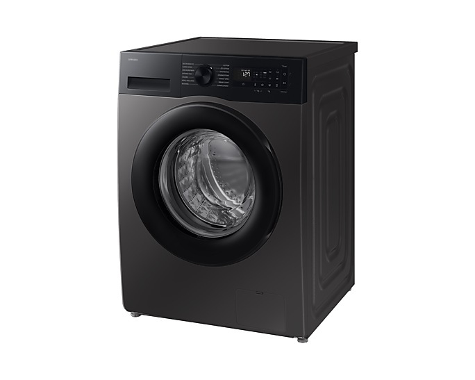
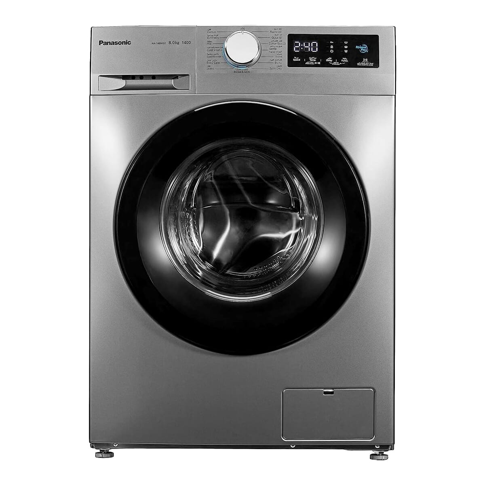

Home Appliance Guide | Washing Machines
Washing Machine Price in Nepal [Updated 2026]

Best washing machine deals at Shisham Homes (real-time prices)
All models listed below are in stock, come with official Nepali warranty, and are available for delivery in Kathmandu and major cities. Click on any product to see detailed specifications and purchase options.

Washing machine prices in Nepal vary based on type (front load vs top load), capacity, energy efficiency, and brand. With busy urban lifestyles and increasing laundry needs, choosing the right washing machine is a significant decision. This 2026 guide provides updated price ranges, detailed comparisons, and expert advice tailored to Nepali homes. We focus on reliable brands like Samsung and Panasonic, both widely available with strong after-sales service across Nepal.
Washing Machine Price Ranges in Nepal (2026)
Based on current import duties and retailer trends, here is the realistic price segmentation for new washing machines in Nepal. All prices include VAT and are in Nepali Rupees (NPR).
| Machine Type | Capacity (kg) | Price Range (NPR) | Ideal for |
|---|---|---|---|
| Semi-automatic (top load) | 6 - 9 kg | 18,000 - 30,000 | Budget buyers, small families |
| Fully automatic top load | 6 - 8 kg | 35,000 - 55,000 | Convenience, easy to load |
| Fully automatic front load | 7 - 9 kg | 55,000 - 85,000 | Fabric care, water/energy efficiency |
| Inverter front load | 8 - 10 kg | 72,000 - 95,000 | Long-term savings, low noise |
Samsung and Panasonic dominate the fully automatic segment. For example, the Panasonic NA-148MG4LN1 (8 kg front load) is priced at NPR 72,940, while the Samsung WW90DG5U24AX (9 kg front load with inverter) retails for NPR 81,910. Semi-automatic models remain popular in rural areas due to lower cost and simpler repair.
Front Load vs Top Load: Which is better for Nepal?
Both types have pros and cons. Front load machines tumble clothes through water, using less water (about 40-50 litres per cycle versus 80-100 litres for top load). They are gentler on fabrics and can be stacked with a dryer. However, they are more expensive and require bending to load/unload. Top load machines (fully automatic) have a shorter cycle time, are easier to load, and generally more affordable. In Nepali households where elderly users or those with back issues are present, top load may be more comfortable. For energy and water conservation, front load is superior, especially in areas with water scarcity.
How to choose the right capacity (kg)
Capacity is measured in kilograms of dry laundry. Overloading reduces cleaning quality and strains the motor. Use this practical guide for Nepali families:
- 1-2 persons: 6-7 kg. Suitable for light weekly laundry. Price: NPR 35,000-50,000 for top load, NPR 55,000-65,000 for front load.
- 3-4 persons: 7-8 kg. Most common segment. Handles daily wear, bed sheets, and towels comfortably.
- 5+ persons or frequent heavy loads: 8-10 kg. Reduces number of cycles. Front load inverter models are ideal.
The 8 kg front load machines (like Panasonic NA-148MG4LN1) are the best-selling in Kathmandu Valley because they balance capacity, price, and efficiency.
Inverter technology and energy efficiency
Inverter motors use variable speed control instead of constant on/off cycles. This results in quieter operation, less vibration, and up to 30-35 percent lower electricity consumption. With Nepal's rising electricity tariffs, an inverter washing machine pays back its price difference within 2-3 years. Additionally, inverter models have longer lifespans due to reduced mechanical stress. Both Samsung and Panasonic offer digital inverter technology with 10-year motor warranty on select models.
Smart buying tips for Nepali consumers
- Check voltage fluctuation protection: Many modern washing machines have built-in surge protection or wide voltage range (140V-280V). This is crucial for areas with unstable grid supply.
- Compare annual water and energy cost: A front load inverter machine can save over 10,000 litres of water per year compared to a top load machine.
- Warranty matters: Samsung and Panasonic provide 1 year comprehensive + 10 years on motor/compressor (for inverter models). Always verify the warranty card.
- Delivery and installation: Shisham Homes offers free doorstep delivery within Kathmandu Valley and professional installation.
- Seasonal discounts: The best washing machine prices in Nepal are often available during summer (April-June) and Dashain season. Keep an eye on our exclusive offers.
Prolonging washing machine life in Nepali conditions
Dust, humidity, and hard water can affect performance. Follow these steps: Clean the detergent drawer and door seal (for front load) every month to prevent mould. Run a drum clean cycle every 2 months using a machine cleaner. Do not overload – 8 kg machine means 8 kg dry laundry, not wet. For front load machines, leave the door slightly ajar after each wash to let moisture evaporate. Clean the inlet filter every 3 months if you have hard water.
Frequently asked questions about washing machine prices in Nepal
What is the average price of a fully automatic washing machine in Nepal?
Top load automatic machines cost between NPR 35,000 and NPR 55,000. Front load automatic machines range from NPR 55,000 to NPR 85,000 depending on capacity and inverter technology.
Which brand is more reliable for washing machines in Nepal, Samsung or Panasonic?
Both have excellent service networks. Samsung offers digital inverter technology and smart features, while Panasonic focuses on durability and effective stain removal. Compare specific models based on your budget and required capacity.
How much electricity does a washing machine use in Nepal?
A typical 7-8 kg front load inverter machine consumes about 0.8-1.2 kWh per cycle. With daily use, monthly electricity cost is roughly NPR 300-500. Non-inverter models may cost 30 percent more.
Where can I find the lowest washing machine price in Kathmandu?
Shisham Homes offers competitive pricing, genuine products, and official warranty. Check our website for live prices and limited-period deals.
Is a front load washing machine worth the extra cost in Nepal?
Yes, for families who wash frequently. The water savings, fabric care, and lower electricity bill make up for the higher upfront price within 2-3 years.
Ready to buy your new washing machine at the best price?
Shisham Homes brings you authentic Samsung and Panasonic washing machines with warranty, delivery, and after-sales support. Compare and order online or visit our showroom.
View all washing machine deals →Prices mentioned are subject to change based on market conditions and import duties. Always check the product page for the latest price and availability.